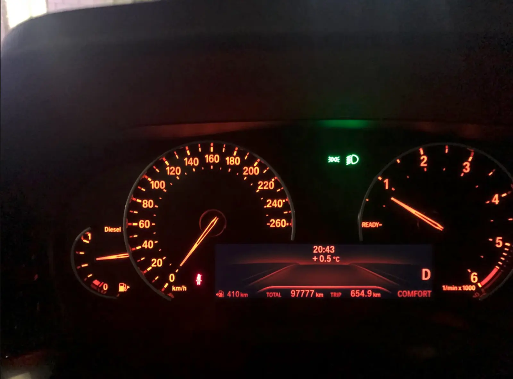

Антон Лисицын — диагностика и кодирование BMW/Mini в Москве
BMW Diagnostics
BMW Diagnostics • Moscow
Диагностика и кодирование BMW
Профессиональная диагностика BMW с использованием ISTA+.
Кодирование функций, активация Apple CarPlay,
отключение Start/Stop и поиск неисправностей.
Услуги
Диагностика BMW
Проверка электронных блоков,
чтение ошибок и анализ неисправностей
с использованием ISTA+.
Кодирование функций
Активация скрытых возможностей BMW:
Apple CarPlay, настройки комфорта,
отключение Start/Stop.
Консультация
Помощь в диагностике проблем
и подборе решения без лишней замены деталей.
Обо мне
Антон Лисицын
Специалист по диагностике и кодированию BMW.
Более 15 лет занимаюсь разработкой программного обеспечения
и применяю инженерный подход к автомобильной электронике.
Интерес к автомобилям появился еще в детстве,
а со временем увлечение BMW превратилось в отдельный проект.
Опыт в программировании помогает глубже понимать
логику работы электронных систем автомобиля:
находить причины неисправностей и аккуратно решать задачи,
связанные с кодированием и настройкой.
Почему обращаются ко мне
✓
Без навязывания ремонта
Как проходит диагностика
Подключение диагностического оборудования,
чтение всех блоков управления BMW,
анализ ошибок и проверка возможных причин неисправности.
Используется программное обеспечение ISTA+
для профессиональной диагностики автомобилей BMW.
Примеры работ

BMW 3 G20
Активация Apple CarPlay.

BMW 3 G20
Отключение Start/Stop.

BMW 3 G20
Диагностика систем.
Есть вопросы по BMW?
Отправьте сообщение — обсудим проблему и варианты решения.
Написать в Telegram